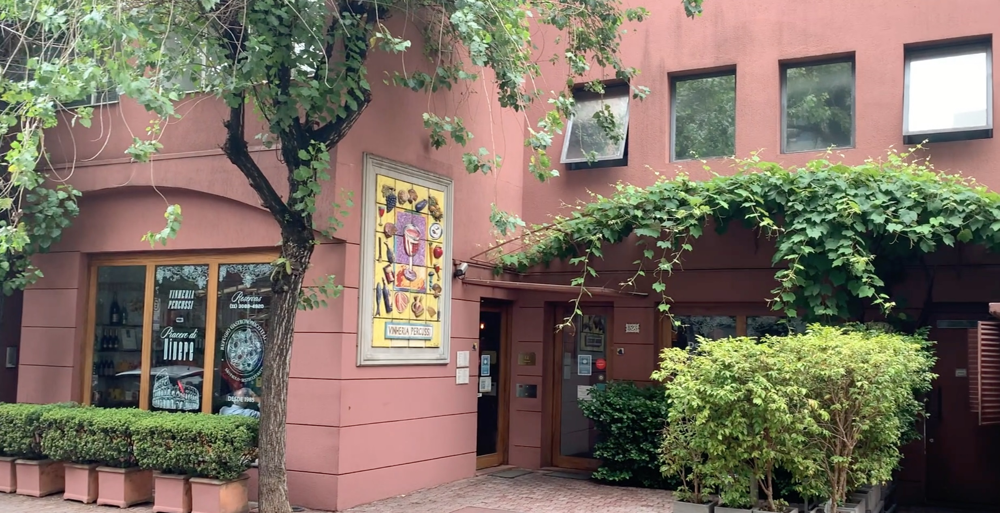

| A Vinheria Elite Jobs começou com uma idéia de 5 alunos que buscavam saber mais sobre os tipos, e histórias dos vinhos. Quando um deles mostrou que pode ser possível trabalhar com isso e aplicar todo o conhecimento ganhado no estudo em suas carreiras como revendedores de vinhos. | Eles começaram vendendo aos poucos, primeiro para os amigos mais próximos, depois para amigos dos amigos. Porém, eles sempre buscavam mais, mais alcance, mais lucro, mais sucesso para seus investimentos. Foi então que Lucas Sobral teve a idéia de comercializar online. Mal sabiam eles que essa foi a primeira forma de realizar um sonho de sustentebilidade. | Conforme as demandas subiam, mais eles se preocupavam com a qualidade dos vinhos, sabendo que eles, caso fiquem muito tempo em viagem, possam perder a qualidade. Com isso eles aprimoraram suas estruturas, além de comprar outros galpões para transformar em vinharias e assim tanger uma maior área de clientes. |  |